作者视角的世界引擎：静态稿与原型评审板
w00039 t16。开发者 2026-11-02 要求：在开始存储与 Spec 之前，先用自己给的故事种子做一个具体的静态例子，从作者的视角看最终效果，借此找出现有设计（已接受的提案 docs/proposals/world-engine-kernel.md）的不足。
每张图的外框都是真实组件：外壳网格、标题栏、活动栏、编辑器标签条、状态栏、右栏的 Agent 对话视图。中间的条目树、条目页、回执、待处理、变更详情、建议、改动记录、剧情表是一次性的草稿，不是产品代码。图是静态的，悬停、弹出、拖动这些交互没有画出来。画布 1440×900，亮色。
样本：故事种子、“再加一个面板”和第一章大纲都是开发者 2026-11-01 给的原文。第 1 章正文按大纲写；第 2 章“用钱说话”是主会话续写的示意，里面故意留了两处要记账发现的问题：余额 19,800 和估计的蛋糕价钱对不上；“淡金色的长发”和开局设定的“银白长发”不同。
界面上不出现记录 id、Component、字段路径（提案第 8 节“入口与用词”），所以草稿里把提案的几个词换成了作者的说法：初值 → 开局，讲述 → 讲到的地方，补丁 → 改了什么，生效位置 → 什么时候。
把写手的上下文分成两层 说明
你的问题：大多数用户用的是别人写的写手 Profile（社区分享的，或 NeuroBook 自带的），他们想在“写战斗场景时带上某段写作提示词”这类事上自己说了算，又不想去改 Profile。旧应用里 Profile 自带表单选项，你觉得不够。
不够的原因是：表单里有什么选项由 Profile 作者决定，用户只能在他留的口子里选。我的建议是把上下文分成两层，各有各的主人：
| 层 | 谁说了算 | 里面是什么 |
|---|---|---|
| Profile 层 | Profile 的作者 | 系统提示词，和它自己的表单选项（旧应用那种，保留） |
| 作品层 | 写这本书的人 | NeuroBook 按作品里的文件拼出来的几块：写作提示词、稳定的设定、前情、这一章。换哪个 Profile 都会收到 |
Profile 不用知道作品层里写了什么，只决定这几块放在哪；不写就按缺省的顺序全带上（上一节那张五块的表）。所以社区的 Profile 不用为每个用户留口子，用户的东西一定进得去。
作品层里加一种东西：写作提示词卡 说明
一张卡就是作品里的一个文件，例如“写作提示词/战斗.md”：正文是提示词，文件开头写它什么时候带上。
| 什么时候带上 | 例子 |
|---|---|
| 总是带 | 文风提示词、稳定的设定 |
| 按场景 | 这一章的细纲里有一条计划标了“战斗”，标着“战斗”的卡就带上 |
| 这一章手动勾 | 这一章想试试“多写心理活动” |
- 看得见、改得了：工作单“细纲”一步的“写手还会拿到”里，列出这一章带上了哪几张卡、为什么带上（例如“因为这一章有战斗”），可以临时去掉或加上。
- 一套机制：文风的三个文件、稳定的设定都是“总是带”的卡，放在同一个文件夹里。检查用的提示词（文风检查、“再查一项”里自己写的那一句）是同一种文件，只是标着“写完以后用”。
- 能分享：卡就是文件，可以随作品带走，也可以从别人那里拿一套过来。
- 场景怎么标：场景类型（战斗、日常、感情戏……）是你自己定的一组词。在“细纲”一步给每条计划选；Agent 提计划、记账时也可以标。
这一版不做“出现某个关键词就自动带上”（酒馆世界书那种）：写手拿上下文的时候正文还没写，关键词只能去对细纲，容易带错；真有需要以后再加。
两层这个方向对不对 待定
对：作品层由 NeuroBook 拼，Profile 只管自己的系统提示词与选项
用户换 Profile 不丢自己的文风、设定与提示词卡。代价是写手 Profile 的写法要有一份约定（留出这几块的位置），自带的 Profile 先照做。
还是放在 Profile 里，把表单机制做强
例如让 Profile 的表单能加“按场景注入的提示词”这种栏。灵活度看 Profile 作者，换一个 Profile 就要重填。
都不是
在备注里写你的想法。
提示词卡第一版做哪几种“什么时候带上” 待定
总是带
文风、稳定的设定靠它。
按场景
你举的“战斗场景”靠它。要先有“场景类型”这组词和给计划标场景的入口。
这一章手动勾
最简单，也是另外两种的兜底。
按关键词
细纲里出现某个词就带上。容易带错，不推荐第一版做。
这个方案还缺什么 待定
定了以后写进任务 t36（写手上下文与分级摘要），和摘要一起出计划。
方案：范围摘要两两合并 说明
你的要求：L 摘要管一章（三级，探索时的提示词我读了：L1 不超过原文一半，L2 约三分之一，L3 两三百字）；S 摘要管一个范围，把几乎无限的前文压到固定的长度，越远记得越粗，参数可调。
做法。每满 10 章，用小模型把这 10 章的 L2 合成一段范围摘要（约 400 字）。相邻两段同样大小的范围摘要再合成一段更粗的，字数不变、管的章数翻倍：20 章、40 章、80 章……给写手时，用最少的几段把“很久以前”盖满，最远的用最大的段。不满 10 章的零头由每章的 L3 顶着。
例：写第 152 章，按你给的阶梯（原文 2 章、L1 3 章、L2 4 章、L3 至少 11 章）：
| 第 1–80 章 一段，约 400 字 | 第 81–120 章 一段，约 400 字 | 121–130 一段 | 131–142 每章 L3 | 143–146 每章 L2 | 147–149 每章 L1 | 150–151 原文 | 152 要写的 |
左边三段灰的就是 S 摘要：131 章只用了三段、约 1200 字。因为每段字数一样而管的章数越远越多，自然就是“越远越粗”。
| 书的长度 | S 摘要最多几段 | 约多少字 |
|---|---|---|
| 100 章 | 3 段 | 1200 |
| 1000 章 | 7 段 | 2800 |
| 3000 章 | 9 段 | 3600 |
为什么不用“一份摘要每章滚着改”当 S 摘要。滚着改的那种每章都把旧摘要再压一遍，细节一轮轮丢、错了会一直带下去；改了前面某一章就得从那一章起全部重做；而且它每章都变，吃不到缓存。两两合并的每一段只做一次，改了某一章只重做盖着它的那几段（1000 章的书最多 7 段），S 这一部分每 10 章才变一次。
可调的参数（缺省值在括号里）：原文几章（2）、L1 几章（3）、L2 几章（4）、L3 至少几章（11）、多少章合一段（10）、每段多少字（400）。再给两三个现成的档：省（原文 1、L1 2、L2 3、L3 10）、标准（上面这组，3000 字一章时前情约两万字）、宽。
几条规则。
- 摘要只从正文做，不给摘要的模型看设定里的真相。所以摘要里只有读者读到过的东西，不会把写手不该知道的秘密带进去。
- 每份摘要记着它是从哪一版正文做的。正文改了，那一章的三级摘要和盖着它的范围摘要标成“过期”，工作单上能看到、点了重做；重做之前先用旧的。
- 在中间插章、调章序会让后面的范围摘要全部过期（每 10 章一段的边界挪了）。1000 章重做约 100 次小模型调用，可以接受，记为已知的代价。
- 三级 L 摘要逐级转：正文 → L1 → L2 → L3（你说的“详细的可以转成粗略的”）。开工前先用探索时那一章对比一次“逐级转”和“各自从正文做”，差别大就改回各自从正文做。
写手上下文的排法 说明
照你写的五块来，我补了每块从哪来、缓存断在哪：
| 块 | 内容 | 从哪来 | 多久变一次 |
|---|---|---|---|
| 1 系统 | NeuroBook 的系统提示词、你加的额外指令 | 内置加设置 | 基本不变 |
| 2 写作提示词 | 文风提示词、参考正文（可空）、文风检查提示词（开卷） | 作品里的三个文件 | 你改的时候 |
| 3 稳定的设定 | 这本书是什么、题材、受众、基础世界观、核心设定 | 作品里的一个文件，你写 | 你改的时候 |
| 以上跨章都能吃到缓存 | |||
| 4 前情 | 从远到近：S 摘要、L3、L2、L1、最近两章原文；最后是滚动摘要 | 写完一章后小模型做好存着 | S 每 10 章变；别的每章往前挪一格 |
| 5 这一章 | 写作指令、细纲，以及现在已有的本章计划、这一场的秘密、在场的人、称谓、伏笔等 | 工作单的“细纲”一步 | 每章 |
- 第 4 块从远到近排，S 摘要在最前，所以连着 10 章这一段也能吃到缓存；同一章里重写、写完以后的文风检查，前四块全部命中。
- 文风检查就是“写完以后”里的一项检查：一份提示词文件就是一项检查。上一轮的“再查一项”里自己写的那一句，存成文件以后就成了每章都跑的检查，这也回答了“检查要不要可扩展”。
- 第 3 块是你手写的文件，程序不替你遮秘密；我会让它在交给写手前按现有的保密规则扫一遍，里面出现了绝密设定的名字就在工作单上提醒。
S 摘要用哪种做法 已定
两两合并（上面的方案）
每 10 章一段，相邻两段再合；字数随书的长度只慢慢涨（1000 章约 2800 字）。
按卷
一卷一段摘要，卷里再按 10 章分段。读起来最顺，但要你把章分好卷，卷的大小不一样时“越远越粗”不成立，很长的书段数一直涨。
只要一份滚着改的
长度固定、最简单，缺点见上面。
“滚动摘要”怎么做 已定
你列的第 4 块里另有一份“到目前为止的滚动摘要”，用来快速告诉模型现在的局面。它和 S 摘要分工不同：S 是按范围留下因果，滚动摘要是一段固定 300 字左右的“故事到现在”。
每章滚一次，每 10 章从头对一次
平时用“上一份加这一章的 L3”更新；每满 10 章，改成从 S 摘要和最近几章的 L3 重新写一份，免得越滚越偏。
一直滚
不重对。最省，会慢慢偏。
先不要
S 摘要加阶梯已经盖住全部前文；等真写起来觉得缺再加。
“稳定的设定”从哪来 已定
作品里的一个文件，你写
例如“设定/总纲.md”。内容你说了算，改得少，缓存稳。
从条目里挑
在条目上标“核心设定”，程序把它们的文字拼起来。和设定库不会两处不一致，但条目一改这一块就变，缓存常失效。
文件为主，另可以点名带几个条目
两种都做。
这套方案还有哪里不对 待定
文风按你写的三个部分做成作品里的三个文件（文风提示词、参考正文、文风检查提示词），上一版“文风从哪里来”那一题不再问。你定了以后我建一个后端任务：章的三级摘要、范围摘要、滚动摘要、写手上下文的新排法，Spec 改 plot/brief.md；界面上工作单的“细纲”一步相应改。
第一批的 Spec 可以定下来开工吗 已定
第一批（条目树、条目页、就地改与记一笔、回执与还原、待处理、改动记录、状态栏）的 Spec 草稿写完了，分两路又审了一轮：内核的补口 15 条、界面与编辑器 18 条，33 条核实后都成立，已经改进 Spec 与计划（处理记录在 Task t31 的 evidences/design-review-r2-resolution.txt）。这一轮没有推翻方向的发现，我不打算再审第三轮。批准以后 Spec 提交为“计划中”，我从内核补口开工。
审查以后变了的、你可能在意的几处：
| 事 | 现在怎么定的 |
|---|---|
| 点一个数看来历 | 先列最近 20 步，可以接着往前翻。主角的存款写到后期有几千步，一次全读会超过单次读取的上限 |
| 内核要补的 | 从八项变成十项：多了“断线重试时不重复写、也不误报冲突”（现有的缺陷）和“章表或数据类型变了时通知界面” |
| “改这一笔” | 在那条情节的详情页里改；和设定冲突而待定的情节，也在那一页“改成生效” |
| 填了一半去看别的条目 | 切回来时填的内容还在（原来会丢） |
| 刷新以后的标签 | 没点开的条目标签也显示名字（原来会显示成“条目”） |
| 在“改动记录”里还原 | 编辑区开着正文时，结果用右下角的通知告诉你，通知上有“看回执”“撤销” |
| 就地改的输入框 | 在分页顶上的确认条里，不在值的原位。人物、面板这两个专门界面和通用的字段表用同一种确认条 |
第一批不做、记成已知限制的：待处理里“按正文改设定”这类一键处理；改过“决定”的修订不能在界面上还原（点了会写明原因）；两个同名条目的标签标题相同、分不开；面包屑（见下面第 6 轮的题）。
批准，开工
Spec 提交为“计划中”，按计划从内核补口与编辑器的页面标签做起。
先不批，我有要改的
把要改的写在这一题的备注里；我改完再请你看。
这一轮改了什么 说明
9 张图，都是在第 5 轮上改的；外壳仍是画的示意，画布 1440×900，亮色。对着你的六条：
- 第 1 条，左侧四个图标：见下面“左侧四个图标”。
- 第 2 条，三步的视觉：工作单顶上换成一条三步的导轨，每步有序号、名字和一句现在的情况；做完的是对勾，要你看的那一步字是黄色。每一步的内容分成有框的几块，主操作固定在页面底部（图 1、2）。
- 第 3 条，写了很多章以后改设定：图 5、6。
- 第 4 条，中间一步叫“细纲”，上下文加文风与前情：图 2。
- 第 5 条，检查能不能扩展：“查了什么”改成一行一种检查，最后一行是“再查一项”（图 1、3、4）。
- 第 6 条，面包屑：每一页标签条下面都画上了（图 7、8）。
左侧四个图标 说明
1 第 3 章的工作单 · 开写前
2 第 3 章的工作单 · 细纲
3 第 2 章的工作单 · 写完以后
4 再查一项
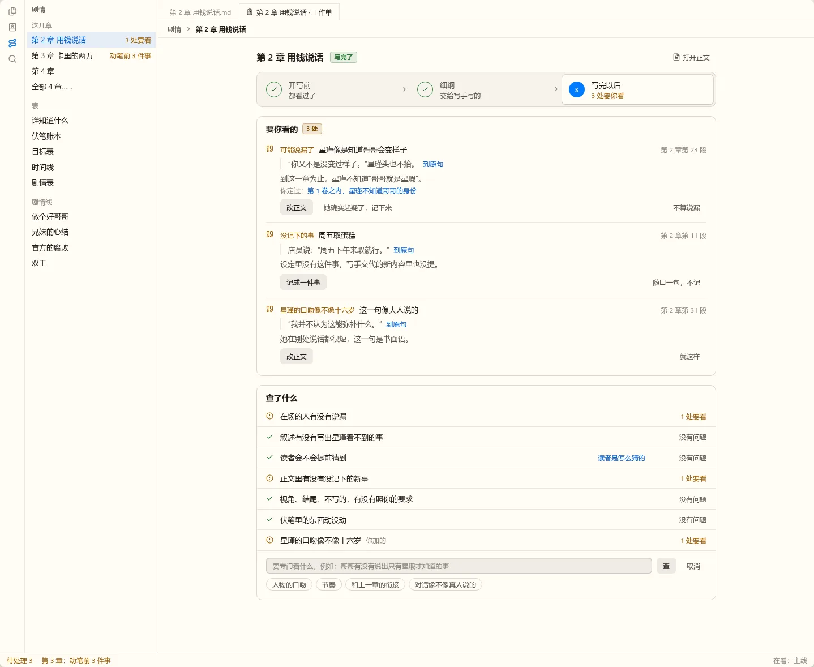
5 写到第 40 章改设定 · 那次改动的回执
6 被牵连的第 30 章的工作单
7 谁知道什么（带面包屑）
8 一条秘密的条目页（带面包屑）
中间一步“细纲”放这些东西对不对 已定
图 2。我的理解是：这一步的主体是细纲、对写手的要求和这一章打算写的；“写手还会拿到什么”收在这一步下面当预览，不再单独占一步。
就按图 2
细纲、要求、计划在上，写手还会拿到的在下，底部交给写手。
这一步只放细纲、要求和计划
“写手还会拿到”不常驻，点“交给写手”时再弹出来给你过目。页面短，但平时看不到文风、前情给了什么。
都不对
在备注里写你想要的。
“前情”缺省给写手什么 已定
现在程序只给“上一章最后 600 字”。要加前情，得先有每章的摘要：我打算在写完一章记账时让 Agent 顺手写一段（两三百字），你可以改。这是后端的新工作，会单开一个任务。
前面几章的摘要，加上一章最后 600 字原文
缺省取最近 3 章的摘要（书长了以后更早的用卷的摘要）。原文只留结尾，保证衔接。每章可以在工作单里改取哪些。
上一章全文，加更早几章的摘要
衔接和口吻最稳，但每章多给三千字左右，写手的额度明显变多。
只给摘要，不给原文
最省，但上一章结尾的语气、最后一句接不上。
写了很多章以后改设定：这样处理行不行 已定
图 5、6。回执列出牵连到的章，被牵连的章的工作单里多一块。现在后端能算出来的是：哪些句子是照旧设定写的（记账时链到这条设定的那些句子）、哪些还没写的计划靠旧设定才成立、哪些章的检查结果过期。算不出来的：正文里没被记账链到设定的句子（要靠重查才发现）。
就按图：列出来，一章一章处理与重查
重查在各章的工作单里点，花多少额度当场写明。27 章都要重查时要点 27 次。
另加“重查这几章”
回执上可以勾几章一起重查，先显示预计的额度再确认。要后端加排队与进度，多一块工作。
“再查一项”这样画行不行 已定
图 3、4。界面上每种检查是一行，结果都是同样的卡片，所以以后多一种检查不用改界面。已有的几种（别的插件登记的也算）可以直接点；“自己写一句要查什么”后端现在还没有，要加。不做“保存一套自己的检查”这类框架，等这个功能定了再说。
就按图
开写前、写完以后各有“再查一项”，可以点已有的，也可以自己写一句。
先只能点已有的
不做“自己写一句”，后端不用加东西。
先不要“再查一项”
只把检查一行一种列出来。
面包屑什么时候做 已定
图 7、8。上次我建议“要，第一批就加”。第一批的设计审查指出它比我想的贵：现在的面包屑组件、键盘操作都只认文件，要加一种“点了执行命令”的段；条目的面包屑要读出它的整条上级。所以我改了建议。画法上，面包屑写的是“这一页在哪”，不是“从哪一页点过来的”。
第一批不做，和剧情侧一起做
第一批的条目页在名字上面写一行“分组 › 上级”（上级能点），够用。等剧情侧这几种页面定了，一次把页面的面包屑做对。
第一批就做
条目页、回执页、变更详情页先有面包屑。第一批多一块编辑器的改动。
不要面包屑
靠左边一栏的高亮和标签标题就够了。
这 8 张图里，哪一张还不对 已定
可以只写图号加一句话。下面第 5 轮的两题（看哪条线、时间线怎么排）也还等你答。
背景 说明
第一批的计划与 Spec 草稿送了设计审查（Sonnet），35 条（阻断 4、重要 22、建议 9），核实后都成立。大部分是我改计划就行的（编辑器的页面标签要按标签各有实例与状态、读取的合并与规模、测试的搭法、新建条目的字段等）。有一条改变了第一批的范围，要你定；另一条是你上次定的“底部面板默认隐藏”落在别的工作上。逐条的处理在 Task t31 的 evidences/design-review-resolution.txt。
界面要用、内核现在给不出的东西，补还是砍 已定
我的计划把内核的读写接口当成现成的。审查逐条对过以后，第一批界面要用而现在读不到、写不了的有这些：
| 界面上的东西 | 现在缺什么 |
|---|---|
| 就地改的确认条里“这次会写回哪里、带来什么变化” | 预览不收就地改的请求 |
| 回执页的“改了什么” | 读修订时只有“带来的变化”，没有每个字段的改前改后 |
| 位置选择里的“第 N 章 某某” | 没有读章序与章标题的接口 |
| 条目树的“未出场”、马甲挂在本体下、“再显示 N 项” | 读树时不带位置，不给出场、马甲关系、总数 |
| 值后面的“第 N 章改过”、点值看来历 | 来历里没有每一步在哪一章；只能整个条目的来历一起读，大书上一次将近 1 MB，贴着单次上限 |
| 情节分页 | 不能只读“这个位置之前的”，不能从新往旧翻，没有总数 |
| 就地改时按字段出数字框、选项框 | 读条目时拿不到字段的种类、单位、选项、范围 |
| 语义档的“记一笔”（只写一句发生了什么） | 记一笔的接口只收数 |
补这些要改内核（nb-canon）、世界服务的接口，以及四份已经标成“已实现”的 Spec（加条目，不改已有行为）。
补上这八项，第一批前面加一片“内核补口”
界面照原定的做全。补口的 Spec 与实现按后端的流程走（设计与实现各审一轮）。第一批整体会比原计划多出大约三分之一的工作。待处理里“按正文改设定”这类一键处理、删除确认里的数目先不做。
不动内核，第一批收窄到现在给得出的
能做的：条目树（只有名字与层级）、条目页的值与来历（没有“第 N 章改过”，大书上可能读不动）、待处理的显示与“改这一笔”、改动记录与还原。没有：就地改的预览、回执的“改了什么”、按章选位置、情节分页、语义档记一笔。等于只能看、不大能改。
“底部面板默认隐藏”由谁来加 已定
你定了底部面板默认隐藏。工作台正在换成“视图容器”的新模型（另一个会话在做，w00026 t24，提案已接受），新规则是“有容器的区域默认显示”，里面没有“默认隐藏”的写法。那两份 Spec 正在被那边改，我没有动。
让 t24 顺手加
在容器的声明里加一项“不让所在的区域默认显示”。它正在改这块合同，加在一起最省事；需要你转告那边。
等 t24 合入以后，由我在第一批里加
不打扰那边。在那之前底部面板默认显示，我先按“默认显示”做，之后改一次。
不加了，底部面板默认显示
改掉上次的决定。所有新窗口默认多一条底部面板。
这一轮改了什么 说明
按第 4 轮的审查（84 条）与你 2026-11-10 的答复重画，13 张图。外壳仍是画的示意；画布 1440×900，亮色。
- 要你拍板的事只有三种样子：对一句正文表态（图 4）、对一个决定表态（图 1 第 1 条）、两处对不上（图 1 第 2、3 条）。三种是同一张卡，最右总有同一个“不用管”类的出口。时间对不上不再是另一种横幅。
- 一个数：工作单最上面一句话回答“能不能动笔”；侧栏那一章后面、状态栏上是同一个数。上一章没处理完的检查在开写前也提一句。
- 点下去有去处：决定在底部面板里定、推迟、放弃、新建（图 2）；对写手的要求、打算写的每一条都有“改”；蓝色的名字都是链接，秘密、伏笔、目标本来就是条目，点了开它的条目页（图 7），不另画详情窗格。
- 给写手的上下文是程序实际拼出来的（图 3），不再手写。上面先用一张小表回答你最关心的：每条秘密给了写手什么、告诉了写手谁不知道。
- 检查过期的样子（图 5）：按你定的，规则不变，界面明说还有几条暂时看不到。
- 真实规模：伏笔账本改成一行一个伏笔加一条按章的小格带（图 8，章再多也只是格子变多）；谁知道什么默认只列主要角色，多一列“别的人”，按“关于谁”分组，上面有筛选（图 6）。
- 多条线进了每一屏：页头的“看哪一刻”旁边多一个“看哪条线”，状态栏右边写“在看：某条线”；回溯章的工作单按段分成两栏（图 12）；谁知道什么在回溯以后的线上标出“带过来的”（图 13）。时间线重做（图 11）。
- 规范：去掉了每屏的灰色说明文字；黄色只表示“要你处理”；同一个概念只用一个叫法（谁知道、信错了、决定、写手）；页头与位置选择沿用第一批条目页的画法。
这一轮没画的：剧情表（沿用第 2 轮的）；时间线的“一行一个人”“按讲的先后”两种排法（只画了一行一条线）；平行视角与补叙的例子（星瑕没有，时间线的画法能放下：补叙的事排在它发生的那一格，标“在哪一章讲的”）；检查正在跑、失败、没跑过三种状态；人物页的“目标与态度”分页；390 像素窄屏。
“看哪条线”是整个窗口一个，还是每页各选各的 已定
图上两种都画了：每页页头有一个选线的下拉，状态栏右边也写着“在看：主线”。实施时只留一种。
整个窗口一个
在状态栏切换，所有页面一起跟着变，页头只写一行“在看：回溯以后”。写回溯以后那几章时切过去，写完切回来。要对照两条线时开两个窗口。
每页各选各的
页头的下拉留着，可以一页看主线、另一页看回溯以后。灵活，但每开一页都要想一下它在看哪条线，容易看错。
时间线这样排行不行 已定
图 11：列是故事里的时间段（“十年前”“周三”这种说法照原样），行可以换成一条线一行、一个人一行，或者按讲的先后排；每件事标着“在哪一章讲的”，所以回忆排在它发生的那一格。
就按这个格子做
同一周的两条视角线是两行，回溯是另一行，回忆在它发生的那一列。时间段多了以后列可以按卷折起来。要在 nb-ui 里新做一个格子组件。
先做成简单的列表
一条线一个列表，按故事时间从上到下，不对齐列。做起来快，但两条线“同一时刻各在发生什么”看不出来。
1 第 3 章的工作单 · 开写前
2 定一个到期的决定
3 给写手的上下文
4 第 2 章的工作单 · 写完以后
5 检查过期的样子
6 谁知道什么
7 一条秘密的条目页
8 伏笔账本
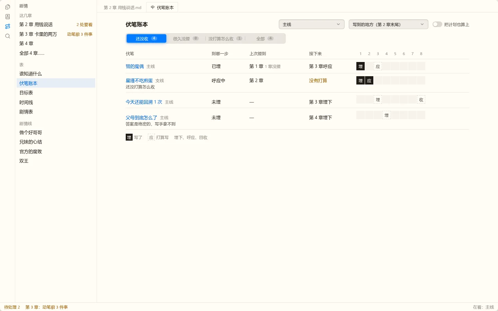
9 目标表
10 人物条目页 · 知道什么
11 时间线
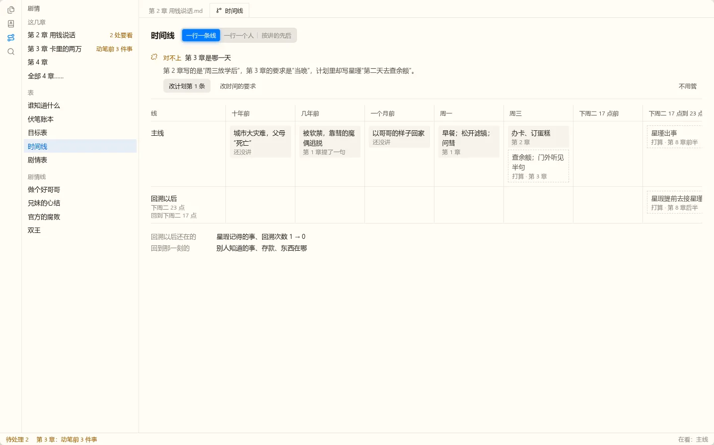
12 回溯章的工作单
13 谁知道什么 · 回溯以后
14 题，答了 13 题 说明
三组：一、第一批（设定侧）计划的 5 题；二、第 4 轮审查以后要定的 6 题；三、第 4 轮原有的 3 题（在下面“第 4 轮”那一节，带图）。每题都写了推荐与不这样做的代价；同意推荐就点推荐的那一项，有别的想法写在备注里。
背景 说明
第一批做设定侧：条目树、条目页、回执、变更详情、待处理与改动记录、状态栏计数。计划在 Task t31 的 plan.md，分九片，先写 Spec 并审查。下面 5 题定了以后我就写 Spec。
第一批做不做条目的新建与删除 已定
现在记账与 Agent 工具都还没做，世界里的东西只能来自样本、手动新建和手动记一笔。
做最小的
新建条目填名字、类型、放在谁下面、启用哪几种数据；条目页里能删除。都有回执、能还原。
不做
界面只在星瑕样本上有内容，你自己的作品打开是空的。少两个表单。
条目页刷新以后恢不恢复 已定
条目页、回执页用的是编辑器的“页面标签”。现在这种标签刷新以后不恢复（欢迎页就是这样）。
恢复
刷新或重开作品以后，开着的条目页还在。编辑器要多记一种标签，多一段恢复的逻辑与测试。
不恢复
刷新以后开着的条目页全部消失，只剩文件标签。
点条目树是不是“预览标签” 已定
文件树现在是这样：单击开一个斜体的预览标签，再点别的文件就替换它，双击才留下。
第一批不做，单击就开正式标签
同一个条目再点是切过去。连着点很多条目会开很多标签。
做，和文件树一样
要让页面标签也支持预览与“留下”，编辑器的改动多一截。
条目页里“人物”“面板”这些分页怎么画 已定
你 11-01 定过各种数据的界面放在自己的分页里、用 Vue 单独写。现在内置的只有两种够测试用的最小类型，完整的字段清单（t10）还没定。
第一批先用一张通用的字段表
每种数据一个分页，里面按字段列出名字、值、改过的标记，点值看来历，数值能记一笔。各自单独的界面等 t10 定字段时再做。
第一批就给人物、面板各写一个专门的界面
好看一些，但字段清单一变就要重写。
底部面板默认显不显示 已定
待处理与改动记录放在底部面板（你 11-02 定的）。按工作台现在的规则，面板里只要有视图，新窗口第一次打开时它就默认显示。
默认隐藏
状态栏有“待处理 N”，点了才打开。要给工作台加一个小的声明（这种视图不算进“默认显示”）。
默认显示
不用改工作台。所有新窗口默认多一条底部面板，写作区变矮；别的功能的界面测试基线也要跟着改。
写完以后的检查：处理了一条，其余几条怎么办 已定
现在的规则：一章的检查结果是一整份，正文或记录一改，这一份就过期，过期以后整章的结果都不再显示，直到重查（重查要调模型）。所以第 2 章查出两条，你处理第一条时记了一笔，第二条会跟着消失，待处理从 2 变成 0。“不算问题”这种处理不改记录，不会触发。
规则不变，界面明说
过期时工作单与待处理都写“第 2 章的检查过期了，还有 1 条没处理的暂时看不到”，给“重查”；会让检查过期的按钮，点之前说一句。规则与实现都不用动。
过期的结果照样显示，标上“过期”
没处理的那条还看得到，只是提醒它可能已经不成立。要改规则（现在明写“不再报”）；过期的结果可能是错的，你有可能照着一条已经不成立的提醒去改。
只让受影响的那一条过期
最顺手。但要逐条记住每个结果依赖了什么，规则和实现都复杂不少，重查也要能只查一部分。
开写前的“先照写”按钮 已定
图 1 里到期没定的决定有一个“先照写”。它该记什么（下一章还提不提醒、算不算你同意了）现在没有规则：Spec 写的是“由写作任务定”，而写作任务还没设计。
这一轮不画，等写作流程定了再加
到期没定的决定只有“现在定”和“推迟到某一章”两个出口。
现在就定成“这一章不再提醒”
点了以后这一章的工作单不再把它列在最上面，下一章照常提醒；不算你同意了什么。
细纲放在哪 已定
给写手拼上下文时要用这一章的细纲，现在应用里没有地方写它。写作指示（视角、时间、结尾停在哪）我打算直接放在工作单里填，这一条不问。
细纲是作品里的文件，每章一份
在编辑器里写，和正文一样有历史；主 Agent 用文件工具就能读。工作单里显示它的开头并链接过去。写作流程的草稿（t19）也是按“细纲文件”写的。要定文件放在哪、怎么和章对上。
细纲是工作单里的一个文本框
存在剧情插件的记录里，不是文件。做起来最快；但没有编辑器的排版与历史，Agent 要另给它读细纲的办法。
界面上管写正文的那个 AI 叫什么 已定
审查里扮演新作者的那位说：“写手”会被理解成人类合作者或者作者自己。
写手
和右栏跟你说话的“写作助手”、后台的“记账”是三个不同的角色，各有名字；第一次出现的地方写成“AI 写手”。
AI
最好懂，但分不清是哪一个 AI。
“章的工作单”叫什么 已定
每章一页，放开写前要看的事、给写手的上下文、写完以后的检查。审查说“工作单”是个新词，能猜出意思，但标签上没有章名，和章节文件对不上。
工作单，标签写成“第 3 章 卡里的两万 · 工作单”
章节准备
更直白，但“写完以后的检查”也在这一页，名字只说了一半。
不起名字，做成章节文件旁边的一栏
打开章节文件时在右侧显示。不占标签，但和正文抢宽度，右栏已经有 Agent 对话。
时间线与多条线，要不要从第二批拆出去 已定
审查指出图 7 的画法不成立：只按世界线分行，画不出“同一周的两条视角线”和“第 25 章回忆十年前”；回溯以后，工作单、秘密与知情、人物页读的是哪条线也没有入口。这一块牵涉每一屏，不是改一张图的事。
拆出去，第二批先不做
第二批的界面都读“当前这条线”（和第一批一样）。回溯、平行视角、补叙、时间线等第二批的主体定了以后，单独做一轮设计。
和第二批一起设计
星瑕的回溯是核心能力，早点想清楚每一屏怎么表达“哪条线”。第二批的设计要多一到两轮才能定。
这一轮看什么 说明
开发者 2026-11-10 定：作者界面分两批，第一批做设定侧（条目树、条目页、回执、待处理、改动记录，计划在 t31），第二批做剧情侧。剧情侧的能力（知情与秘密、伏笔、目标与态度、决定、写完以后的检查、给写手的上下文、时间与世界线）都已实现，但前三轮的稿子没画过它们。这一轮先看它们各放在工作台的哪里。
九张图都是静态的。外壳是画出来的示意（活动栏、侧栏、标签条、底部面板、状态栏），只为看清每块内容落在哪个区，不是真实的外壳组件。画布 1440×900，亮色。
样本沿用星瑕：人物、剧情线、第 1 章和第 2 章与前三轮相同；四条秘密、四个伏笔、五个目标、四条决定、第 2 章的检查结果、第 8 章的回溯是为这一轮补的示意，字段照六份剧情 Spec 的读取结果取。
审查后的更正 说明
2026-11-10 按开发者要求，派了四个审查者用实际例子模拟使用：第一次用的作者拿《星瑕》走四件事；换一部 30 章、40 个人物的悬疑长篇逐屏套进去；推演每个按钮点下去以后；对照界面规范。共 84 条（阻断 4、重要 54、建议 26），核实后没有判为不成立的。下面九张图还是审查前的样子，看图时请注意这几处已知的错：
- 图 2 的文字是手写的，有错。“这一场的秘密”没有照实际规则写（保密的秘密应当把真相给写手并写明谁不知道）；说明与徽标互相矛盾。下一轮改用程序实际拼出来的内容。
- 图 1 “前提变了”那张卡说的原因和目标表里这个目标的依据对不上，是样本写错了。
- 图 3 底下那句“会标成过期”不对。按现在的规则，正文或记录一改，这一章的检查结果整批不再显示，直到重查；处理其中一条时另一条也会跟着消失。这是规则本身的问题，要你定（上面第二组第 1 题）。
- 图 7 的横幅里露出了记录编号“pl9”；图 6 的“和它打架”只写了一边；图 8 那句“写手只拿得到‘知道’的”说反了。
审查指出、下一轮要改的大处：要你拍板的东西两批加起来画成了 15 种样子，收成三种卡片；同一件事在工作单、底部面板、状态栏重复出现而且数字对不上，改成一个口径；“决定”没有可以定下来、推迟、新建的画面；伏笔账本用章做列，60 章放不下，改成一行一个伏笔加一条按章的小格带；秘密与知情 40 个人放不下，默认只列主要角色并给筛选；每屏的灰色说明文字违反界面规范，删掉；时间线画不出平行视角与补叙，回溯时读哪条线也没有入口，这一屏要单独重做。
逐条的处理在 Task 记录的 evidences/design-review-r4-resolution.txt。
剧情侧的东西按什么组织 已定
作者用到这些东西有三个时候：平时翻看与规划；开写某一章之前；某一章写完以后。九张图是按下面这张表画的。
| 东西 | 放在哪 | 图 |
|---|---|---|
| 剧情线、四张表的入口、各章的工作单 | 侧栏“剧情”，活动栏一项，在“设定”下面 | 每张图的左侧 |
| 章的工作单：开写前要看的事、给写手的上下文、写完以后的检查 | 编辑器区的页面，每章一个，三个分页 | 1、2、3 |
| 秘密与知情、伏笔账本、目标表、时间线、剧情表 | 编辑器区的页面，各一个 | 4、5、6、7 |
| 某个人知道什么、经历过什么、想要什么 | 人物条目页多三个分页（和第一批的条目页是同一页） | 8、9 |
| 决定（已定与待定） | 底部面板多一个“决定”视图 | 1 的下半 |
| 检查查出来、要你处理的事 | 进底部面板已有的“待处理”，和设定侧的待处理排在一起 | 3 的下半 |
| 开写前有几件事 | 状态栏一项，点了打开那一章的工作单 | 每张图的最下面 |
按章组织：每章一张工作单
图上的画法。开写前要看的事、写手会拿到什么、写完以后查出了什么，都在这一章的工作单里；账本类的四张表另放，供平时翻看。
按种类组织：不设工作单
开写前的事与检查结果都只进底部面板的待处理与决定；给写手的上下文做成章节文件标题栏上的一个预览按钮。少一种页面，但同一章的三件事分在三个地方。
第二批先做哪几块 已定
七块东西不必一起做。选你想先用上的；没选的排在后面。
章的工作单：开写前与给写手的上下文
图 1、2。数据都是程序算的，不调模型。
秘密与知情
图 4。回答“谁在第几章知道什么、读者知道了没有”。
人物条目页的三个分页
图 8、9。建在第一批的条目页上，改动最小。
伏笔账本
图 5。
目标表
图 6。
写完以后的检查
图 3。要调模型，而且要先有记账（见下面“搭稿时发现的”第 2 条）。
时间线
图 7。要先在 nb-ui 里做时间线组件。
九张图里，哪一张和你想的不一样 待定
可以只写图号加一句话：缺了什么、多了什么、哪个词看不懂。
1 第 3 章的工作单 · 开写前
2 给写手的上下文
3 第 2 章的工作单 · 写完以后
4 秘密与知情
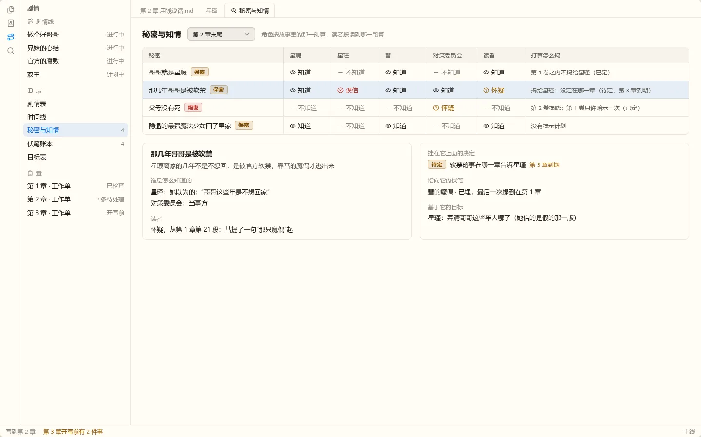
5 伏笔账本
6 目标表
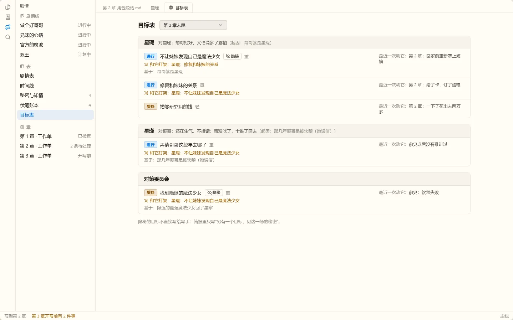
7 时间线与回溯
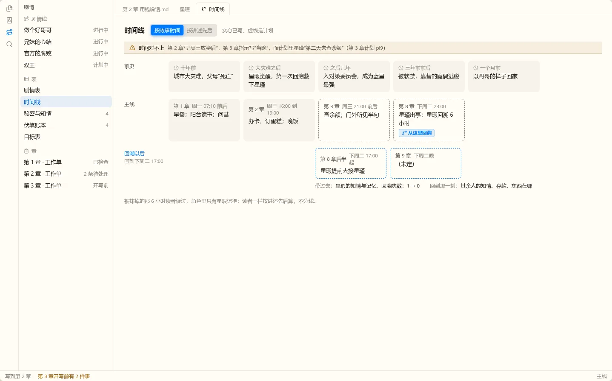
8 人物条目页 · 知道什么
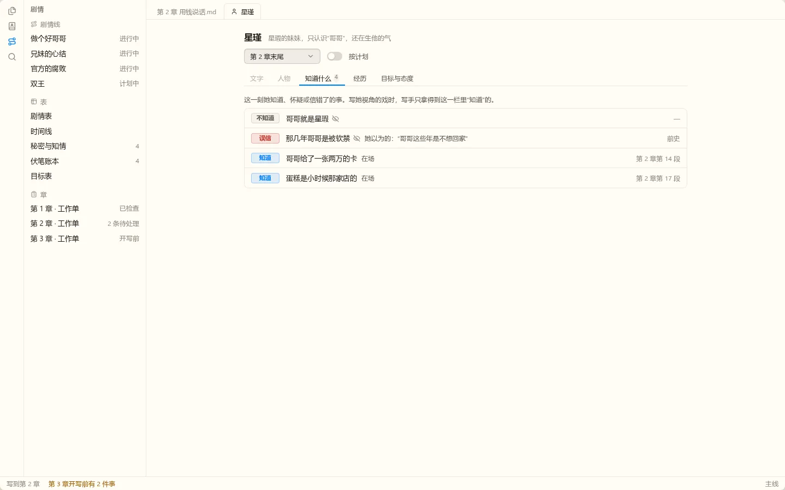
9 人物条目页 · 经历
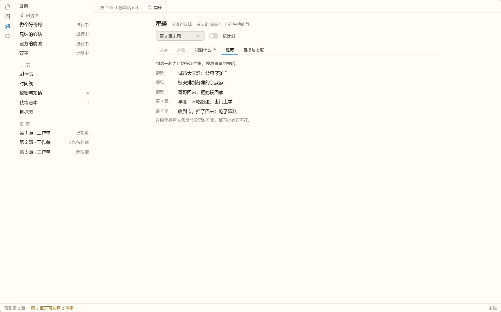
搭稿时发现的 说明
- 没有一部带剧情数据的样本。星瑕样本只有设定侧。第二批开工前要把这一轮的示意数据做成真的（经世界服务写进去的知识点、伏笔、目标、决定各几条），界面测试也用它。
- “写完以后”依赖记账。检查查的是这一章记下来的剧情变更与正文对不对得上；记账（t19、t20）还没做，现在写完一章，世界里没有它的变更，检查没有东西可查。所以图 3 那个分页要排在记账之后。
- 细纲与写作指示在应用里还没有地方写。后端拼写手的上下文时，细纲由调用方当场给，写作指示由界面或写作任务推给剧情插件存着；这两样现在都没有界面。工作单的“写作指示”一节要能编辑；细纲存在哪（章节文件旁边、还是世界里的计划）要定。
- 秘密与知情的列会很多。图上只有四个人。真的书要按“主要角色”或“这一章在场的人”筛列，否则一屏放不下。
- 时间线没有现成组件。图 7 是手排的；nb-ui 里要先做时间线（内核提案“五、影响”里列过）。回溯线与主线对齐也要算，不是简单的列表。
- 工作单是“每章一个”的页面，和第一批的条目页一样要用带参数的页面标签，不用另加平台能力。
这一轮改了什么 说明
开发者 11-02 定了：第 2 轮的四条按推荐；数值追踪做“精确”和“语义”两档，不做“大概”；改设定以后找旧写法，怀疑程序按旧词搜的效果。原型照这些改了（类型 r3/model.ts，走完一周的世界 r3/world.json）：
- 修订只存变了的字段。新建的存整份，修改只存变了的那几个字段的改前改后。走完一周，修订从 48 KB 降到 35 KB，而且这 35 KB 里已经包括新存进去的“带来的变化”。
- “带来的变化”在发布时存进修订。回执和保存后的提示都读它，不再靠重放历史。
- 精确与语义两档。字段声明自己是哪一档，作者可以换。精确档照旧由程序加减、和正文写明的数核对。语义档的值与事件都是文字：正文写明的数是新的起点；之后的事只记一句“发生了什么”；现在的样子由小模型从起点开始归纳，按输入缓存（缓存键是起点加之后事件的文字），输入一样就不再调模型。原型里小模型用查表代替。
- 找旧写法改成两步。记账时，把正文里重述设定的句子链到那个字段上（“这句写的就是原身外观”）；改设定以后，这些句子直接就是候选，不靠按旧词搜。其余的（换了说法的、还没记账的章、细纲、别的条目）交给 Agent 自己找、自己判断。
p12 语义档：存款不记确切的数
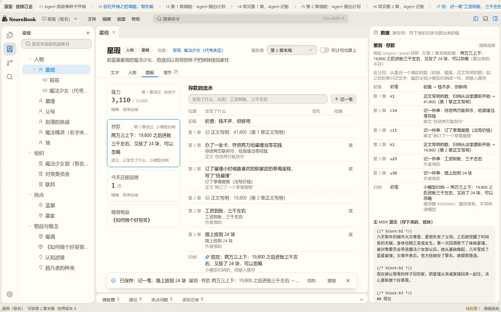
p13 语义档：星瑾对哥哥的态度
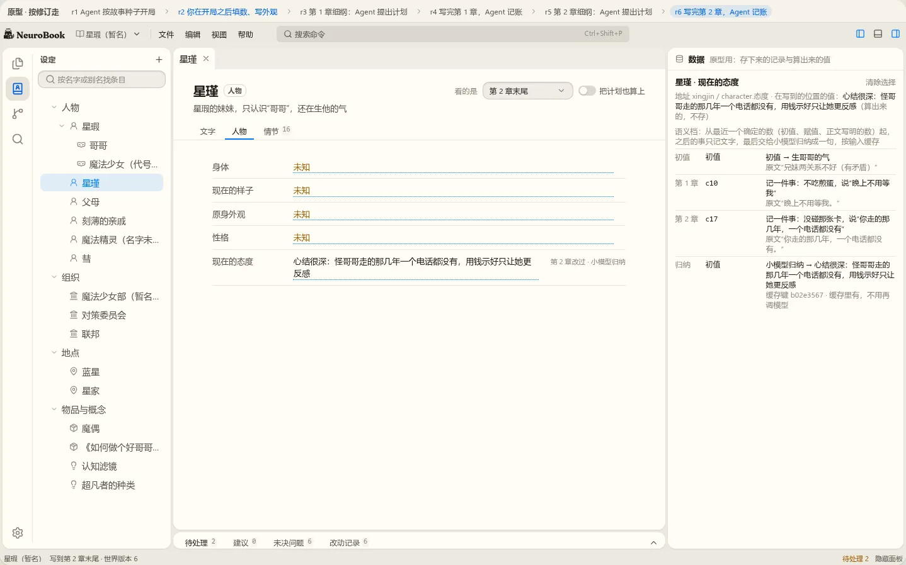
p08 改设定以后的建议（新做法）
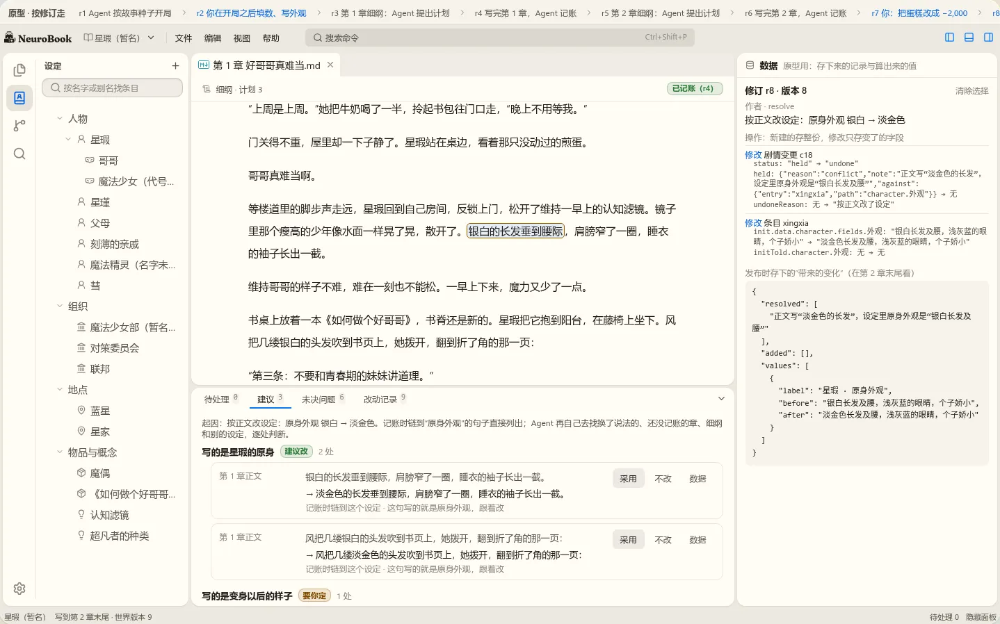
p11 你的改动的回执
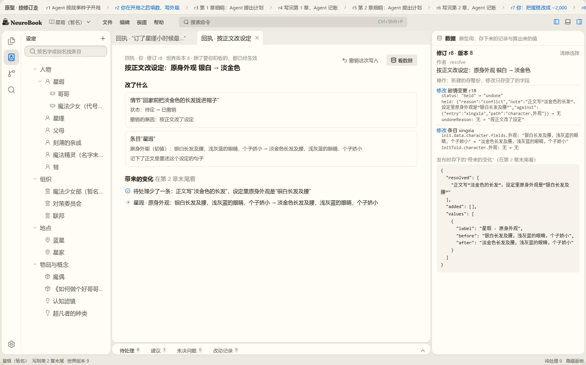
看完数据长什么样，有没有和你理解的不一样的地方？ 待定
选答。下面“做数据结构时发现的”第 3、6、11 条会改到已接受提案里的说法，我在会话里另外问。
这一轮做了什么 说明
开发者 11-02：第 1 轮只能看到界面，看不到数据长什么样，要给静态稿设计数据结构，让它没那么静态。于是把草稿改成了一个可以操作的原型：
- 类型（r2/model.ts）：内核要存的数据结构，注释对照提案。
- 引擎：一组纯函数。发布修订（存改前改后、版本加一）；按位置折叠出状态与来历；比较核对点、找嫌疑区间；算待处理、回执；按字段找还原的依赖、做补偿修订；渲染主 MDX（给作者、给 Agent 的带值写法）；改设定后找旧写法。
- 样本：星瑕的世界不是写死的，是六次修订一步步搭出来的：Agent 按种子开局 → 你填数、写外观 → Agent 从第 1 章细纲提计划 → Agent 记第 1 章的账 → 从第 2 章细纲提计划 → 记第 2 章的账。之后是你在界面上做的事，同样是修订。
- 界面：所有界面都从这些修订重放出来的世界算出来。顶上的步骤条点哪一步就退回到哪一步；右栏换成“数据”，选中什么就显示它存下来的原始记录，选中一个值就显示它的来历，选中一次修订就显示它改了哪些字段（改前 → 改后）；条目页开着时，下面还有主 MDX 的源文和给 Agent 的渲染。
- 能点的：条目树、看的位置与“按计划”、点值看来历、流水和嫌疑区间里的“改这一笔”、变更详情里改数（保存前有预览）、与设定冲突的三种处理、建议的采用与不改、改动记录的还原（有依赖时列出来）。在 Lab 里打开组件
WorldEngineDraft就能玩，场景 p01 到 p10 是下面十张图的起点；要开着草稿 worktree 的开发服务。 - 走完这一周以后的整个世界：r2/world.json（正文省略）。
只存六种东西 说明
回答 11-02 “同类有点多、架构有点乱”：存下来的只有六种，其余都是算出来的视图。
| 存下来的 | 是什么 | 样本里的例子 |
|---|---|---|
| 条目 | 身份（id、类型、挂在哪、身份同一、出场）加初值：名字、一句话、主 MDX 的块、各 Component 的数据；初值里的数带依据 | 星瑕、哥哥（马甲，挂在星瑕下面，sameAs: xingxia） |
| 剧情变更 | 一件事，也就是一条情节；计划是还没写的情节。带位置、讲述、涉及、剧情线、连接、补丁、生效状态 | c15 订蛋糕；pl8 用钱说话（计划）；c18 淡金色的头发（待定，报冲突） |
| 核对点 | 正文写明的一个数，有自己的位置 | k2：第 2 章“余额 19,800” |
| 未决问题 | 作者没想好的事，挂在任何对象上，带“正文里可能的答案” | q1 双王（挂在前史“城市大灾难”上） |
| 正文建议 | 改设定以后的旧写法，Agent 判断过 | s1 第 1 章“银白的长发垂到腰际” |
| 修订 | 一次写入：谁、做什么、一组操作（每个对象改前改后） | r6 第 2 章记账（8 个对象）；r7 你改蛋糕（1 个对象） |
| 算出来的（不存） | 怎么算 |
|---|---|
| 某个位置上的状态 | 初值，按位置与排序键打上之前所有生效的已写变更的补丁；“按计划”再加上排到这里的未兑现计划 |
| 来历 | 折叠时记下每个字段被哪几条记录依次改成什么，核对点对没对上 |
| 待处理 | 写到的位置上重算出的诊断（核对点对不上、补丁套不上），加上待定的变更；前面修好了就自己消失 |
| 计划进展 | 有生效的已写变更兑现它，就是已兑现 |
| 回执 | 一次修订的详情：从它的操作里看出新建了什么、兑现了什么、哪些数是估的；计划与正文的差额现算 |
一条情节存下来的样子（处理过以后的 c15），和它对照的核对点：
{"id": "c15", "kind": "written", "text": "订了星瑾小时候最喜欢的那家店的草莓蛋糕，写了“给星瑾”",
"at": {"kind": "chapter", "chapter": "ch2", "key": 20},
"told": [{"source": "chapter", "chapter": "ch2", "quote": "她订了一个草莓蛋糕，店员问要不要写字，她想了半天，写了“给星瑾”。"}],
"involves": ["xingxia", "xingjin"], "lines": ["line-brother"], "links": [{"kind": "fulfills", "plan": "pl8"}],
"patches": [{"op": "add", "at": {"entry": "xingxia", "path": "panel.存款"}, "value": -2000, "basis": {"kind": "derived", "check": "k2"}}],
"status": "active", "by": {"kind": "agent", "session": "写作助手 · 星瑕"}}
{"id": "k2", "at": {"entry": "xingxia", "path": "panel.存款"}, "value": 19800,
"told": {"source": "chapter", "chapter": "ch2", "quote": "星瑕坐在餐桌边，手机亮了一下，是消费提醒：余额 19,800。"},
"place": {"kind": "chapter", "chapter": "ch2", "key": 50}}
做数据结构时发现的 说明
| # | 发现 | 原型里怎么做的 |
|---|---|---|
| 1 | 同类概念收拢成六种。回执就是修订的详情；待处理是诊断加待定的变更；开局审阅、记账回执都是回执。 | 见上表 |
| 2 | “与设定冲突”不用新对象。它就是一条待定的剧情变更，补丁是“按正文的那个值”，记着跟哪个字段冲突。三种处理各是一次修订：按正文改设定 = 撤销这条、改设定；是剧情里的变化 = 让它生效；按设定改正文 = 撤销这条、给一条正文建议。 | c18；图 8 右栏是“按正文改设定”那次修订的改前改后 |
| 3 | 初值不是“开局”。前史夹在初值与第 1 章之间：星瑕的初值是男生，前史里性转、变身、回家。第 1 轮把初值叫“开局”是错的，读位置要分“初值”和“第 1 章开头”。 | 位置选择里有“初值”与各章开头、末尾；图 7 是“现在的样子”从初值一路改到第 2 章 |
| 4 | 初值里的数也要有依据。提案只给补丁标依据。存款的初值是按第 1 章正文定的（估计），魔力是你填的，Agent 开局写的来自种子。 | 条目上加 initBasis |
| 5 | 未知的数不能加减。如果存款一直是未知，第 2 章的 −20,000 会“套不上”，整条情节在那里不算数。所以缺口 1 那条“第一次在正文里出现的数定成初值”不是可选的，是必须的。 | 引擎对未知做加减时报“套不上” |
| 6 | 修订存整份对象太占地方。提案说存“每个被改对象的改前与改后”。走完这一周，记录本身 26 KB，修订已经 48 KB：星瑕这个条目 2 KB，改了 4 次，修订里存了 13 KB 的副本。书长了以后，主 MDX 长的条目每改一个字段就整份复制一次。还原与依赖本来就按字段算。 | 原型照提案存整份，界面上按字段显示差异。建议改成只存变了的字段 |
| 7 | 计划与正文的差额不用存。计划写 −10,000，正文两笔合计 −20,300，回执现算出来。 | 图 3 回执的“计划”一节 |
| 8 | 找旧写法要字段声明“会在正文里重述”。原身外观、性格、马甲的“这个身份的样子”有这个标记，数字没有。找的范围是正文、细纲、别的条目的这类字段；判断交给 Agent。 | 字段定义上的 retold |
| 9 | 还原的依赖按字段算是可行的。还原第 2 章的记账，找到你改蛋糕（同一条变更的同一个补丁）和改设定（同一条待定变更）两次依赖；还原你开局后填的数，只找到改外观那次。 | 图 9 |
| 11 | 你的改动也有回执，但回执里的“带来的变化”要在发布时存下来。开发者 11-02 问“作者的改动没有回执吗”：原来的回执只列新建的东西，改已有记录时几乎是空的。现在任何一次修订都有同一个回执页，多了“改了什么”（按字段，用作者的话）和“带来的变化”（修订前后在写到的位置上比：待处理少了哪些、多了哪些，碰到的值从多少变成多少）；小改动保存后先给一行提示，可以看回执或撤销。“带来的变化”要比较修订前后的世界，原型靠重放算；产品里不承诺按任意历史版本重算，所以要在发布时把它算好存进修订，它和保存前的预览是同一个计算。 | 图 6 下方的提示条；图 11 |
| 10 | 引用别的条目读到未知。主 MDX 里 {ref("brother").identity.外观} 读到未知：给作者显示“未知”，给 Agent 写成 null 加“（未知）”。 | 图 2 右栏下面的两段 |
原型从简、和提案不一样的地方：约束只查下限；“已兑现”只看有没有生效的兑现连接，不看这次套没套上；表达式只认取字段和一种比较；没有并发、没有写入校验；Agent 的判断（找旧写法后的分组）是写死的。
p01 开局的回执
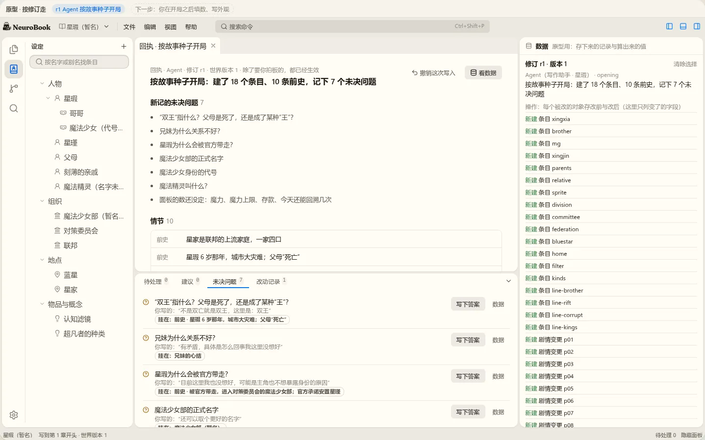
p02 星瑕，第 1 章末尾，点了魔力
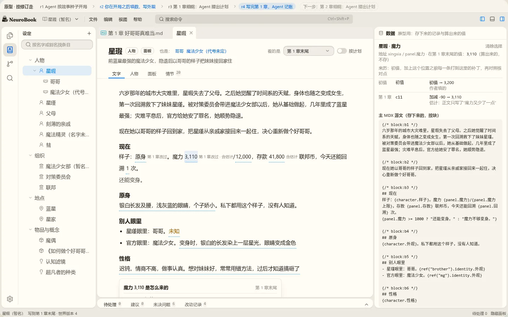
p03 第 2 章的回执
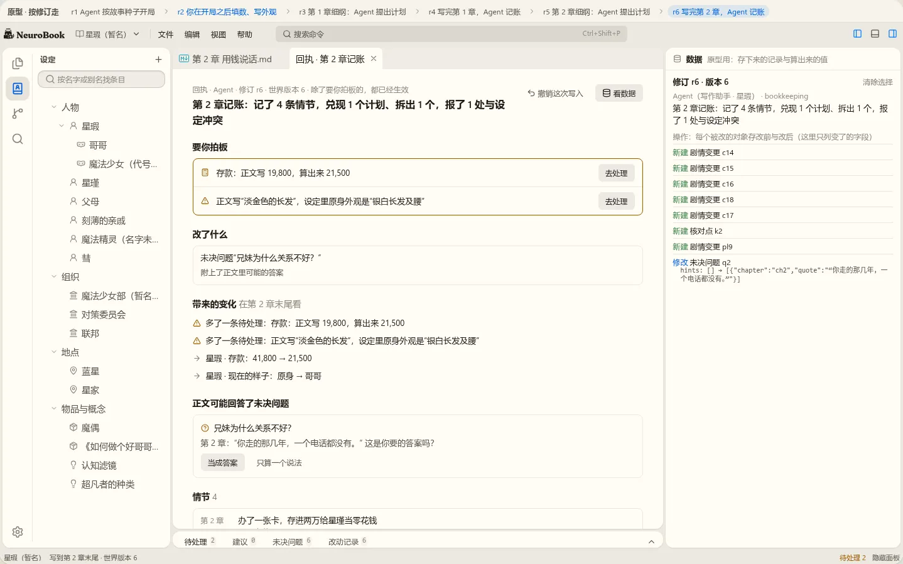
p04 待处理：存款对不上
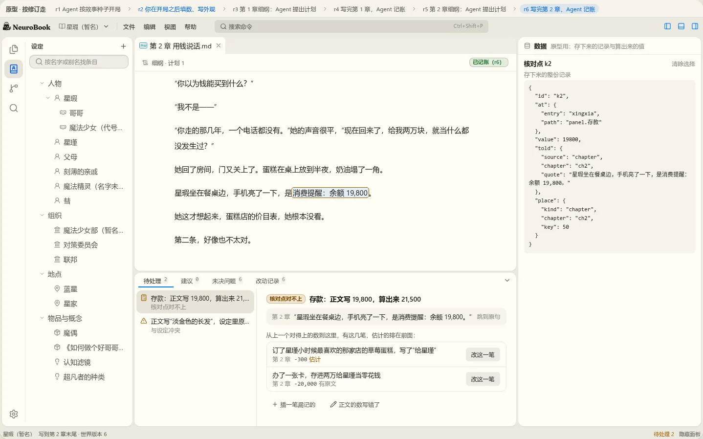
p05 变更详情：把蛋糕改成 −2,000
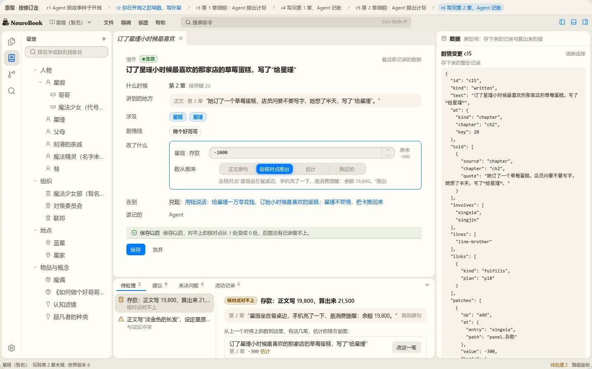
p06 保存以后：面板与流水
p07 “现在的样子”怎么来的
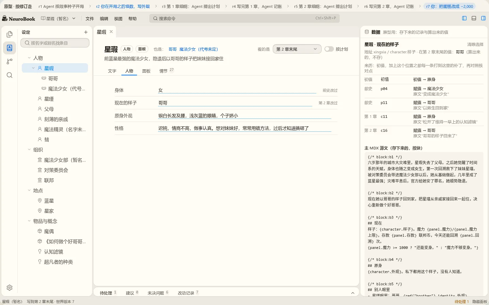
p08 头发按正文改设定以后
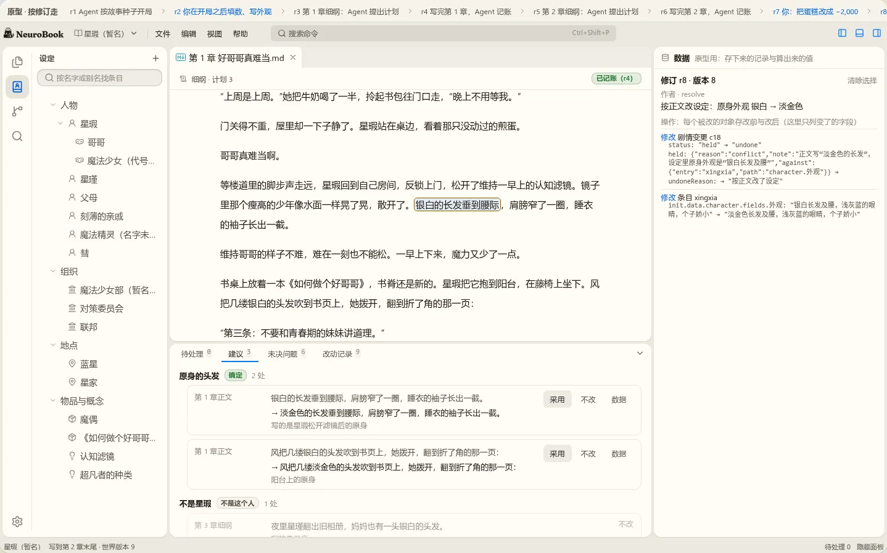
p09 还原第 2 章的记账
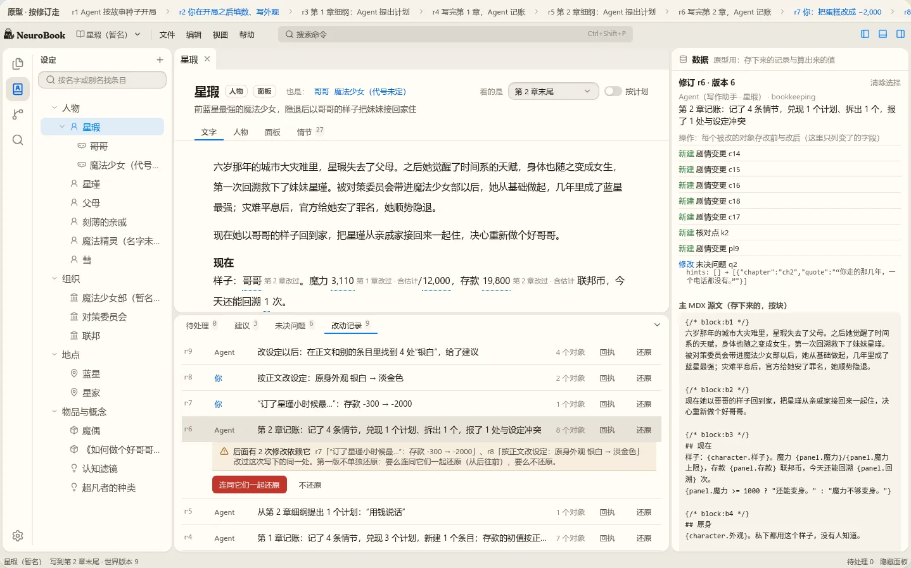
p11 你的改动也有回执
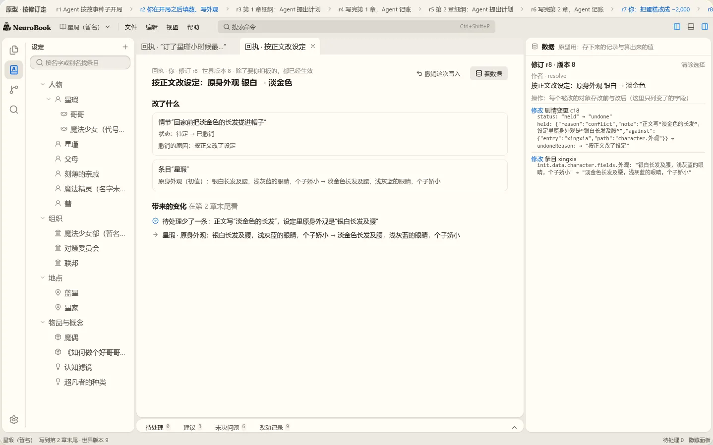
p10 剧情容器与剧情表
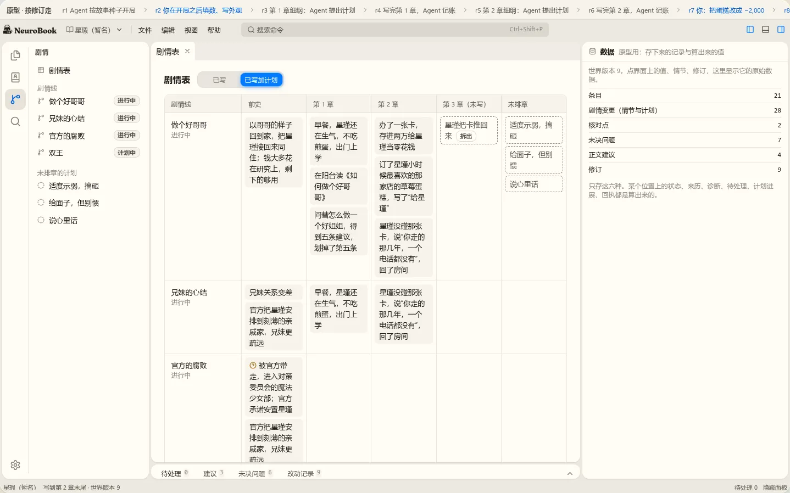
整体看下来，符合你的预期吗？ 已定
先看下面的十屏和“搭稿时发现的缺口”。哪一屏和你想的不一样、缺了什么、哪里多了，直接写；可以只写屏号加一句话。
开发者 11-02 在会话里的十条意见（记在 Task README）：回执好，回执里要看得到情节；底部面板放待处理可以；改动记录与剧情表以后打磨；剧情线不放进设定；要作者审批的东西太多、同类太多。第 2 轮按这些改了。
待处理、建议点开以后的详情放在哪 已定
待处理（第 4 屏）和建议（第 8 屏）的详情要 400px 左右才看得全，底部面板默认只有 200px。
留在底部面板，作者自己拉高
第 4、8 屏现在的画法。上面的章节滚到原句，下面是要拍板的事，两样同时看得到；面板的高度照常由作者拖，系统不替作者改尺寸。
详情进编辑器区的标签页
底部面板只放列表，点一项在编辑器区打开一个“待处理”标签页，和变更详情一样。地方够大，但正文原句就要靠拆分并排才能同时看。
提案没写到、或者照着画出来别扭的地方 说明
这些是搭稿时遇到的，草稿里先按“草稿里怎么画的”一列处理。哪些要改提案、哪些留给后续 Task，我在会话里逐条问你。
| # | 缺口 | 草稿里怎么画的 | 建议归到 |
|---|---|---|---|
| 1 | 种子开局时，数是“未知”。种子只说“钱不多，但够用”。提案只给“已有成稿”定了“第一次在正文里出现的数当初值，标估计”，没说从种子开局时怎么办，也没说“未知”在条目页、给 Agent 的文字、核对点里怎么显示。 | 开局时面板的数空着，列进未决问题；第 1 章记账遇到“账户余额 41,800”，按正文定为开局数，标估计（第 1、6 屏） | t27 内核 Spec |
| 2 | 正文可能回答了未决问题。第 2 章星瑾说“你走的那几年，一个电话都没有”，正好像“兄妹为什么关系不好”的答案。提案只说 Agent 不替作者补全，没说记账碰到可能的答案怎么办；而“角色说的不算世界的变化”。 | 回执里加一节“可能回答了一个未决问题”：当成答案、只算星瑾的一个说法、先放着（第 3 屏） | t19 写作流程 |
| 3 | 就地改紧挨着核对点时，“改设定”的三种改法都和正文冲突。第 2 章末尾刚对上“余额 19,800”，这时把存款改成 29,800，改开局数、改哪一笔，都会让正文的余额对不上，只有“补一笔”不冲突。而在第 2 章末尾，“补一笔漏记”和“这是剧情里发生的变化”是同一件事，两个入口重叠。 | 四种改法照提案列出，每种写明后果；勾选框照留（第 7 屏） | t16 作者界面；规则进 t27 |
| 4 | 未决问题挂在哪。提案写“挂在章或剧情线上”。种子里的未决问题挂在前史（双王）、剧情线（兄妹心结）、组织（部门名）、身份（代号）、面板字段（数）上。 | 挂在各自的对象上，开局审阅里列在最前，侧栏有一个入口（第 1、2 屏） | t27 |
| 5 | 细纲里讲到的过去的事。“被软禁，靠彗的魔偶逃脱”第一次出现在第 1 章大纲里。它不是计划，是已经发生的前史。提案只说 Agent 从细纲提出计划。 | 记成前史，出处写“第 1 章细纲”（第 10 屏“官方的腐败”一行） | t19；记法进 t27 |
| 6 | Agent 自己加的结构算不算替作者补全。你只说“再加一个面板”，面板的四个字段是 Agent 按面板文的常见写法建的。 | 字段建了，数空着，并把“面板的数”列成未决问题（第 1 屏） | t19 |
| 7 | “现在的样子”与马甲条目重叠。星瑕有一个“现在的样子”字段（原身、哥哥、魔法少女），又有“哥哥”“魔法少女”两个马甲条目。原身不是马甲；魔法少女变身后的外观放在马甲上还是本体上，提案没说。 | 样子是本体的字段，马甲只管社会身份；魔法少女的外观写在马甲的文字里，所以改设定时它被列为“请你判断”（第 8 屏） | t10 字段清单 |
| 8 | 工具名撞名。提案的 read、write 和 harness 自带的读写文件工具同名。 | 对话里写成 world_lookup、world_read、world_write（第 1、2 屏右栏） | t20 |
| 9 | 详情放不进默认高度的底部面板。 | 见上面的待定题 | t16 |
故事线 说明
- 你把故事种子发给 Agent，看开局审阅。
- 写第 1 章、记账，然后打开星瑕看看。
- 写第 2 章“用钱说话”，记账，回执里有两处要你拍板。
- 处理“存款对不上”：发现是蛋糕的价钱估错了。
- 在变更详情里把蛋糕改成 −2,000。
- 看星瑕的面板和存款的流水。
- （假设）你直接把存款改成 29,800，看确认条。
- 处理“头发与设定不同”：你选按正文改设定，看正文修改建议。
- 打开改动记录，想撤销第 2 章的记账。
- 看剧情表。
1 开局审阅：交了故事种子以后
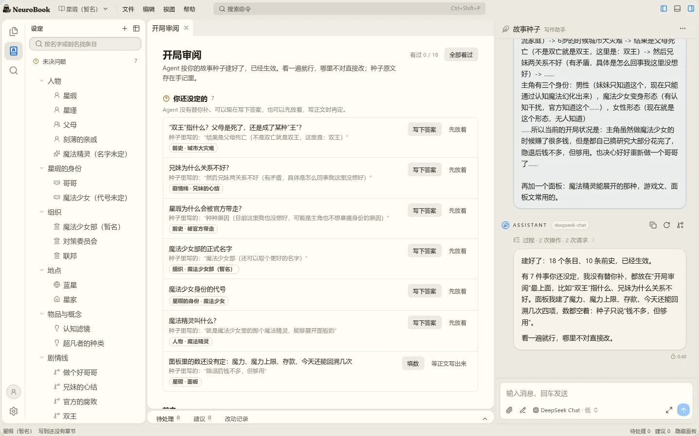
你把种子（加“再加一个面板”）发给 Agent。开局的时间点种子里写清楚了，没有挡住开局的问题，Agent 直接建了 18 个条目、10 条前史，已经生效。它的两次写入（先预览、再发布）收在对话的“过程”里。
开局审阅是“看过”，不是“批准”：你还没定的 7 件事排最前，每件附上种子原文，可以写下答案或先放着；后面是前史时间线和按类型列的条目。“看过 0 / 18”只是进度，不看也不影响写。
2 条目页：星瑕，第 1 章末尾
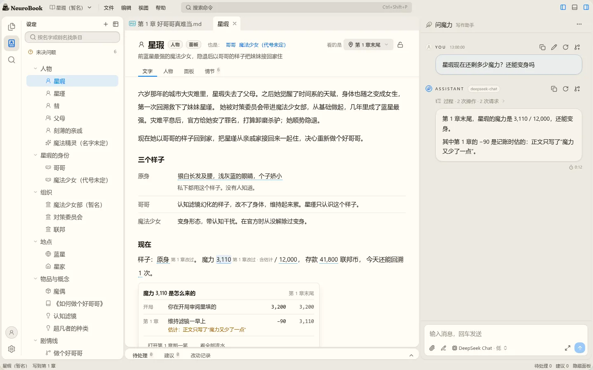
顶上：名字、类型、“也是：哥哥、魔法少女（代号未定）”，右边是看的位置（默认跟着你正在写的章）和锁。下面是主 MDX 渲染出来的文字，值直接嵌在句子里：虚线下划线表示这是一个可以改的值，悬停显示中文字段名；“第 1 章改过”“含估计”是淡色小字。点了魔力，来历展开：开局 3,200（你在开局审阅里填的），第 1 章 −90（估计，正文只写了“魔力又少了一点”）。
人物、面板、情节在各自的 Tab 里，不和文字挤在一起。右栏 Agent 读到的是带值写法：
现在的样子：{character.形态 = "原身"}（显示名：现在的样子）
魔力 {panel.魔力 = 3110}/{panel.魔力上限 = 12000}，存款 {panel.存款 = 41800}
今天还能回溯 {panel.回溯次数 = 1} 次（显示名：今天还能回溯）
{panel.魔力 >= 1000 ? "还能变身。" : "魔力不够变身。" -> "还能变身。"}
3 第 2 章的记账回执
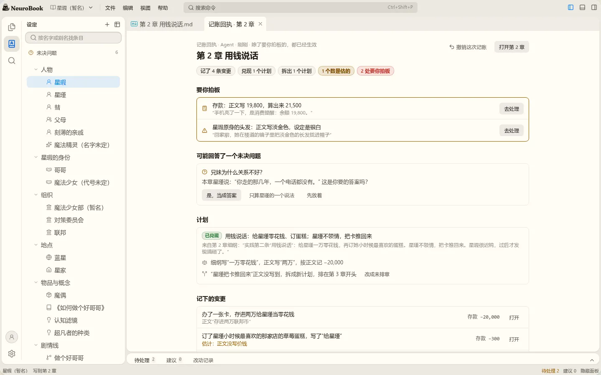
从上往下：要你拍板的两项；一处“可能回答了未决问题”（缺口 2）；计划已兑现，细纲写“一万零花钱”、正文写“两万”，按正文记，没写到的“星瑾把卡推回来”拆成第 3 章开头的新计划；记下的四条变更，蛋糕的 −300 是估的；最后是没有建条目的（街角的蛋糕店没有名字）。除了要你拍板的，都已经生效；整次记账可以一键撤销。
4 待处理：存款对不上
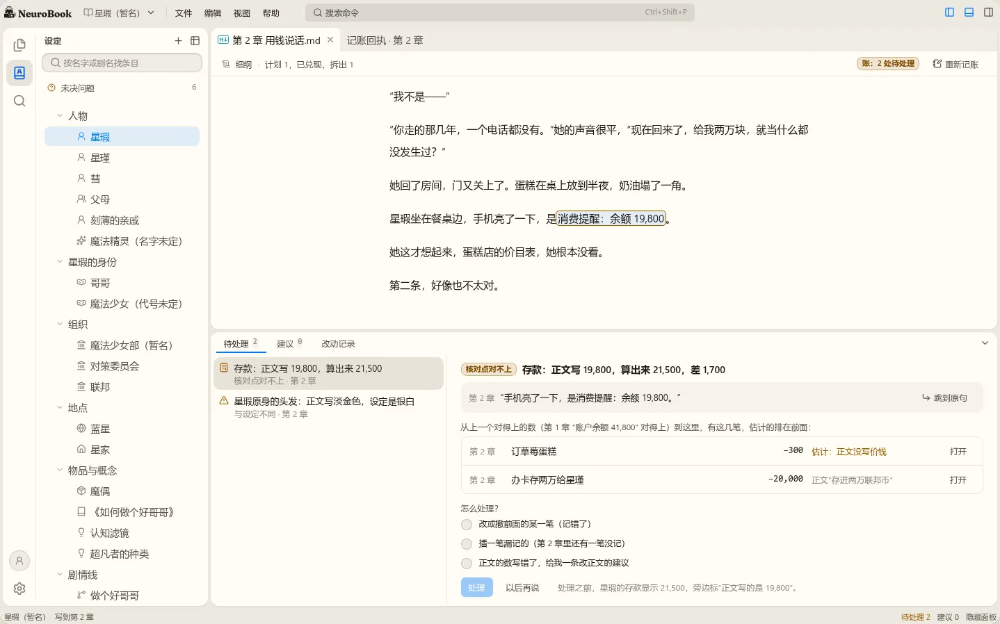
正文写余额 19,800，算出来 21,500。从上一个对得上的数（第 1 章“账户余额 41,800”）到这里只有两笔，估计的蛋糕排在前面。处理办法照提案不预选。
5 变更详情：订草莓蛋糕
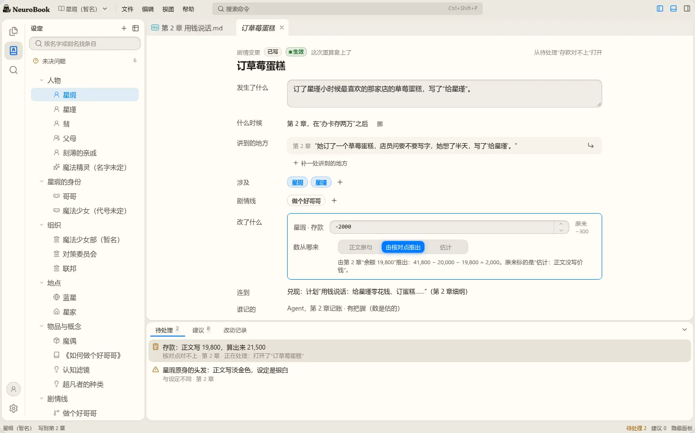
一条剧情变更的全部内容都在这里改：发生了什么、什么时候、讲到的地方、涉及、剧情线、改了什么、连到哪个计划、谁记的。把 −300 改成 −2,000，“数从哪来”从“估计”换成“由核对点推出”，系统写出算式；保存前的预览说待处理会消失、后面没有别的记录受影响。
6 面板：存款的流水
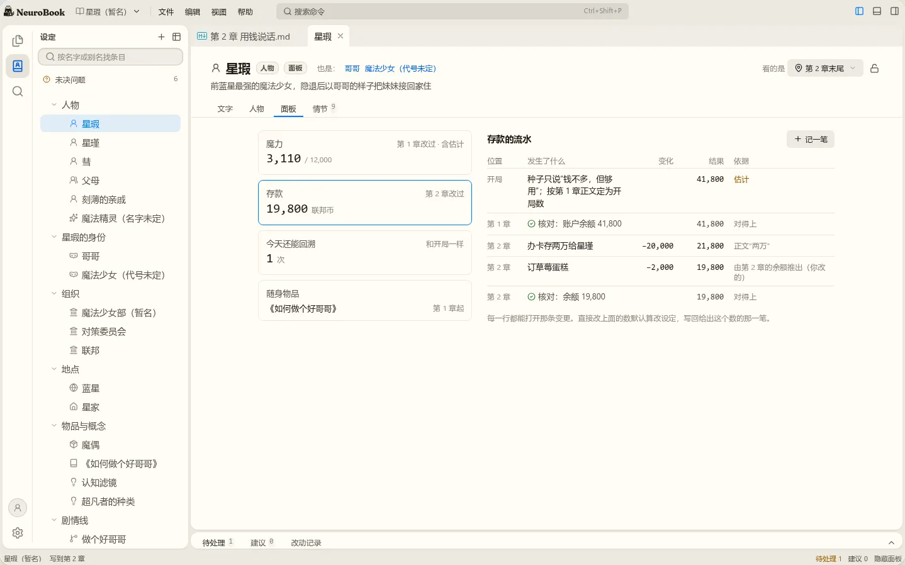
左边是面板的当前值，右边是选中的存款的流水：开局数按第 1 章正文定（估计，缺口 1），两次核对都对得上。每一行都能打开那条变更；“记一笔”落在当前位置（第 2 章末尾）。
7 就地改存款：确认条
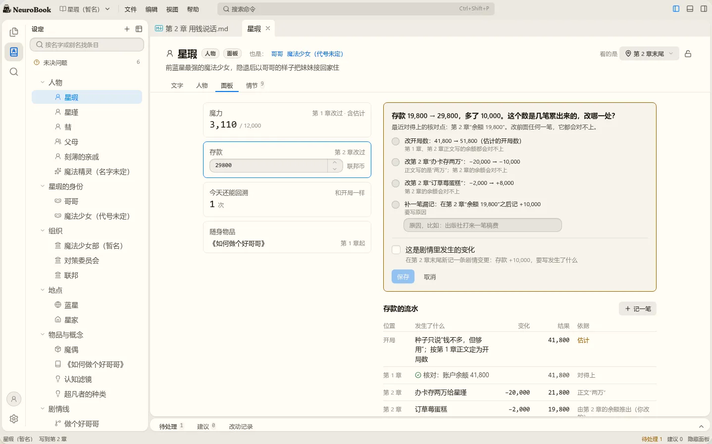
存款是几笔累出来的，所以要你选改哪一处，不预选。每种改法写明后果：前三种都会让刚对上的“余额 19,800”对不上（缺口 3）。“这是剧情里发生的变化”的勾选框在这里和第四种改法是同一件事。
8 改设定以后：正文修改建议
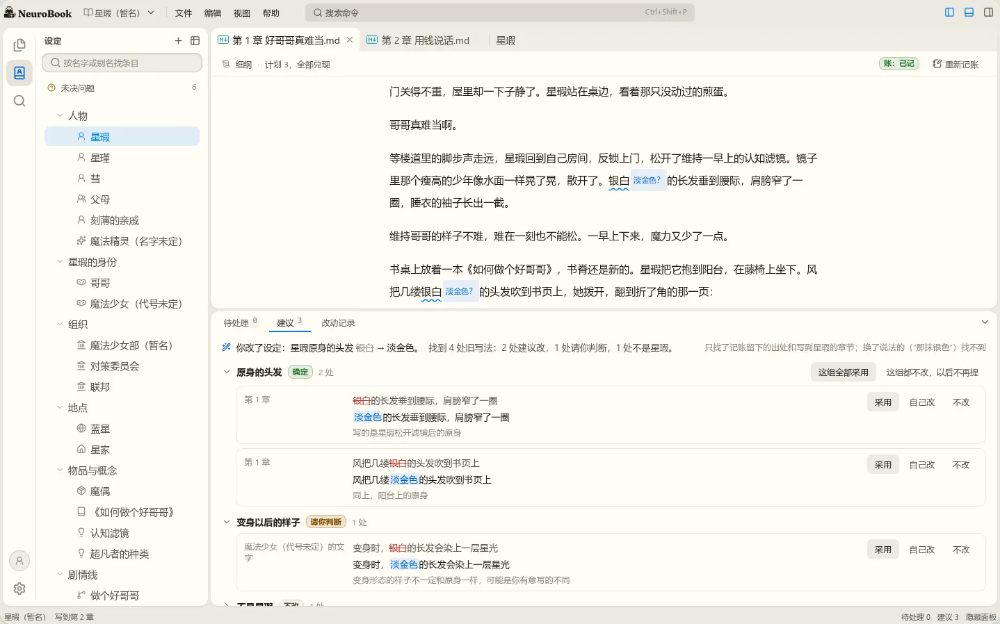
处理“头发与设定不同”时，你选按正文改设定：原身外观的“银白”改成“淡金色”，写回开局设定。系统去找旧写法：第 1 章两处写的是原身，建议改；魔法少女身份的文字里有一处，变身后的样子可以和原身不同，请你判断（缺口 7）；第 3 章细纲里那处写的是母亲，不改。只给建议，不自动改正文；一组可以一起采用，也可以“都不改，以后不再提”。
9 改动记录：撤销第 2 章的记账
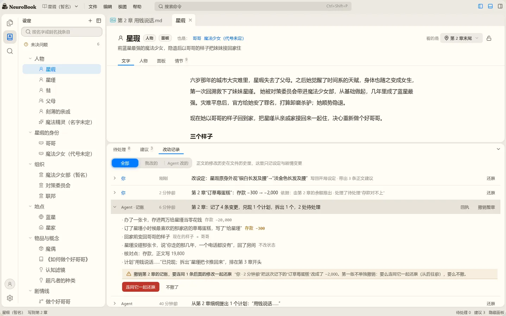
所有修订按时间排，新的在上；每条写谁、什么时候、改了什么，可以还原。你想撤销第 2 章的记账，但后面你把蛋糕改成 −2,000 依赖它：第一版不单独撤，要么连同那条一起还原（从后往前），要么不撤。正文本身的修改历史不在这里，在文件历史里。
10 剧情表
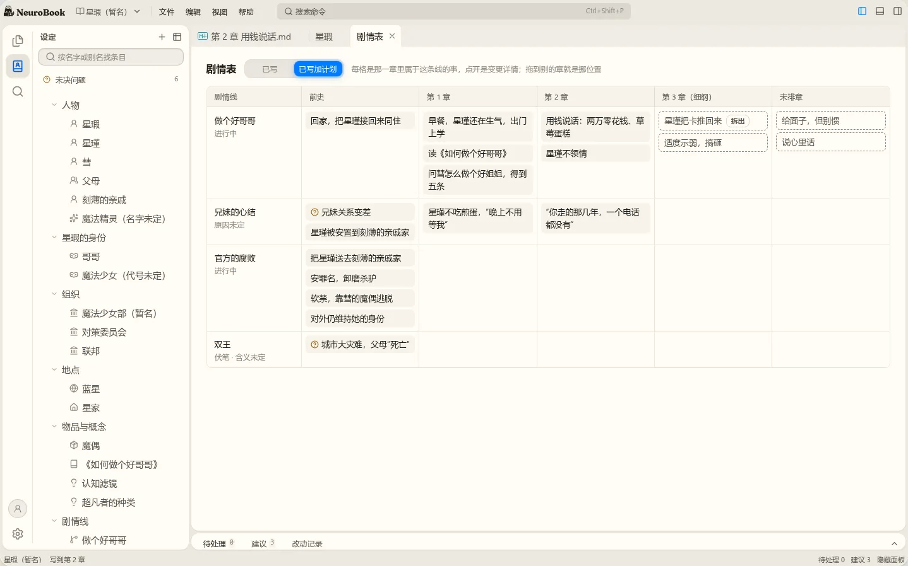
剧情线乘章。实底是已写的事，虚线框是计划，问号是挂着未决问题的。第 3 章的“星瑾把卡推回来”是第 2 章拆出来的；“官方的腐败”的前史里有一条出处是第 1 章细纲（缺口 5）。
新应用里还没有任何设定界面，外框之外都是新画的。旧应用的设定是文件夹加详情面板（packages/neuro-book-legacy/app/components/novel-ide/workspace/WorkspaceLorebookDetailPanel.vue），剧情工作台见归档文档站的截图（docs/archived/vitepress/public/images/剧情工作台.jpg）；两者的模型都已被提案取代，这一轮没有沿用它们的版式。